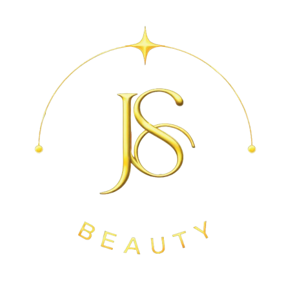
A sua beleza é essencial.
Um espaço focado no seu bem-estar, com tratamentos personalizados para destacar a sua beleza natural.
Agendar meu horário
Um espaço focado no seu bem-estar, com tratamentos personalizados para destacar a sua beleza natural.
Agendar meu horário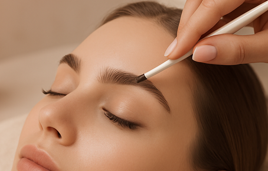
Diferente de uma retirada simples de pelos, este serviço utiliza o visagismo para encontrar o formato ideal que harmonize com as expressões faciais da cliente. O diferencial do "Spa" inclui etapas de relaxamento, como higienização profunda, massagem na região e aplicação de produtos calmantes.
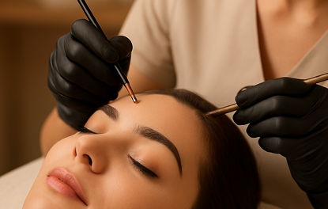
Um tratamento focado em clientes que possuem falhas causadas por retiradas excessivas ou genética. Utiliza protocolos que estimulam o bulbo capilar para o nascimento de novos fios e o fortalecimento dos já existentes.
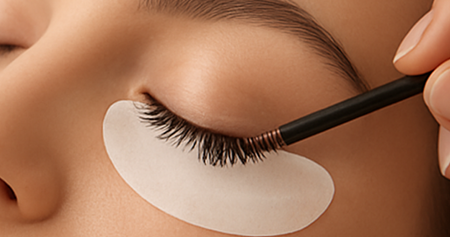
Um procedimento que cria um efeito de curvatura e alongamento nos cílios naturais, como se estivessem com rímel o tempo todo. Utiliza fórmulas que nutrem os fios e o efeito pode durar várias semanas, mantendo um aspecto natural.
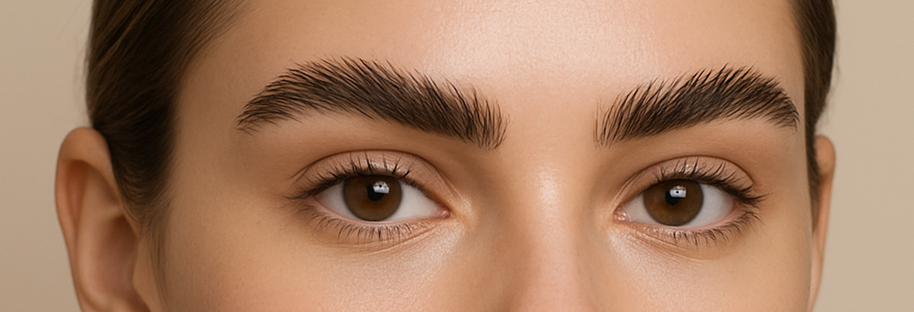
Técnica moderna que consiste em deixar os fios das sobrancelhas mais maleáveis, permitindo penteá-los para cima para um visual "wild" e volumoso, ou apenas para cobrir falhas e dar um aspecto de sobrancelhas mais grossas e alinhadas.
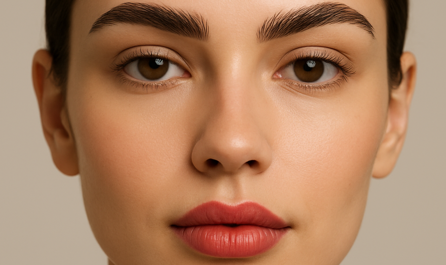
Procedimento de maquiagem semipermanente. Nas sobrancelhas, preenche falhas de forma realista; nos lábios, define o contorno e traz uma cor saudável e uniforme, eliminando a palidez.
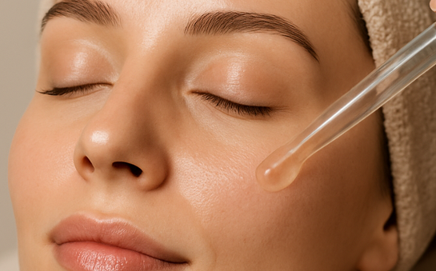
Este tratamento visa regenerar e revitalizar peles opacas ou cansadas, aplicando nutrientes e ativos hidratantes para recuperar a luminosidade e melhorar a textura do rosto, combatendo danos de poluição e estresse.
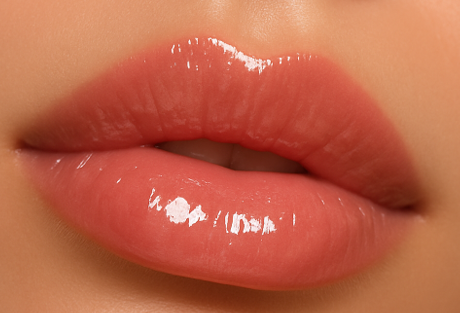
Um tratamento intensivo de hidratação labial que utiliza um protocolo de microagulhamento leve ou aplicação de séruns com ácido hialurônico. O resultado são lábios com aspecto renovado, livre de pelinhas e com um brilho ("gloss") natural.
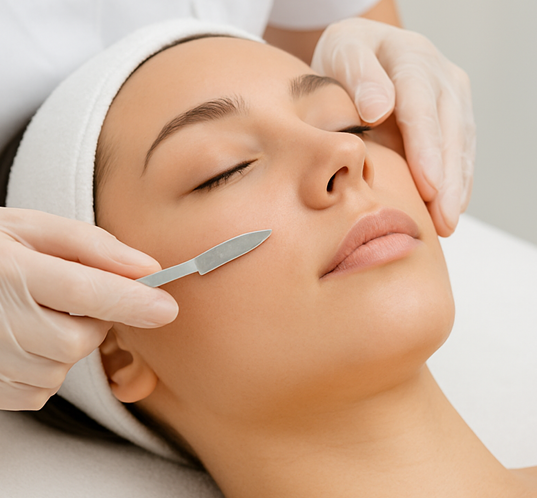
Uma técnica de esfoliação física feita com uma lâmina de bisturi estéril, que remove a camada de células mortas e a penugem facial (vellus hair). O resultado é uma pele extremamente macia, que absorve melhor os cosméticos e deixa a maquiagem impecável.
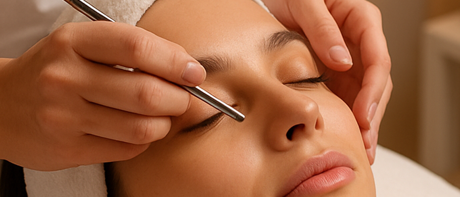
Procedimento essencial para a saúde do rosto, focado na remoção de cravos (comedões), impurezas acumuladas e células mortas. Inclui etapas de higienização, esfoliação, vapor de ozônio para abrir os poros e máscaras finalizadoras.
Diferente dos métodos químicos agressivos, o peeling orgânico utiliza ácidos naturais extraídos de plantas e minerais para promover uma renovação celular segura. Estimula a produção de colágeno e resulta em uma aparência mais uniforme e rejuvenescida.
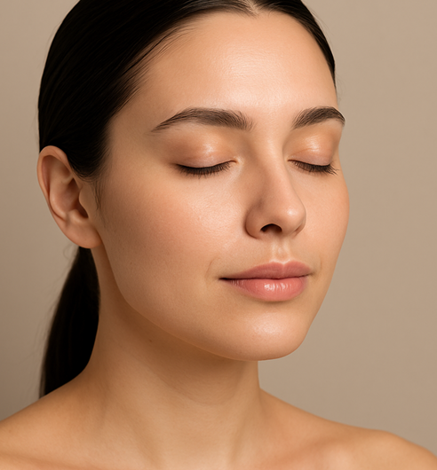
Este procedimento foca na remoção precisa dos pelos da região do rosto, extraindo-os diretamente pela raiz para garantir um resultado duradouro e uma pele lisa por mais tempo. A técnica é aplicada com métodos que visam minimizar o desconforto, sendo ideal para definir contornos e eliminar penugens indesejadas em áreas específicas da face.
Av. Principal da Estética, 123 - Sala 402
Bairro Nobre, Sua Cidade - UF
Segunda a Sábado: 09h às 19h
Ver no Google Maps